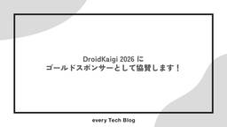
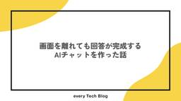

every Tech Blog
https://tech.every.tv/
株式会社エブリーのTech Blogです。
フィード

DroidKaigi 2026 にゴールドスポンサーとして協賛します！
every Tech Blog
はじめに 株式会社エブリーは、2026年9月に開催されるDroidKaigi 2026にゴールドスポンサーとして協賛いたします。「エンジニアが主役のAndroidカンファレンス」である本イベントは、2026年9月1日（火）から3日（木）にかけてベルサール渋谷ガーデンで開催されます。 項目 詳細情報 イベント名称 DroidKaigi 2026 開催日程 2026年9月1日（火）〜 9月3日（木） 会場 ベルサール渋谷ガーデン（東京都渋谷区南平台町） スポンサーランク ゴールドスポンサー ブース出展日程 2026年9月2日（水）〜 9月3日（木）の2日間 エブリーはこれまでも、Go Confer…
2日前

画面を離れても回答が完成するAIチャットを作った話
every Tech Blog
はじめに 前提：エージェントの構成 課題：画面を離れると回答が消える 設計方針：実行の作成と購読を分離する DB スキーマ：残す履歴と実行中の状態を分ける 保存単位は「AG-UI の Message 1 件 = 1 行」 DynamoDB ではなく Aurora MySQL を選んだ理由 会話履歴はサーバーが組み立てる 書き込み設計：イベントは保存せず「生成途中の回答」を上書きする 再合流：会話全体のスナップショットで追いつく 同時実行制御：実行中ロックを NULL 可のユニーク列で作る ロックの解放漏れに備える 停止：切断とキャンセルを区別する Redis は要るか まとめ はじめに 開発本…
5日前

Next.js 16.3のPartial Prefetchingをプロダクトで検証してみる
every Tech Blog
目次 はじめに Partial Prefetchingは何を解決するのか すべてを先読みする方法と、何も先読みしない方法の中間を作る OISHYでPartial Prefetchingを試す 検証条件 計測方法 実験1：クリック前の取得を減らすと、通信と遷移はどう変わるか 実験2：URL固有のデータを待つ間に何が見えるか 補足：適用範囲によって先読みの形が異なった まとめ 参考文献 はじめに こんにちは、開発本部の黒髙です。最近はアメリカ向けレシピサービスであるOISHYの開発に関わっています。 Next.js 16.3では、ページ遷移の応答性を改善する仕組みとしてInstant Naviga…
12日前
Retention Messaging でサブスクリプションの解約画面から継続利用を促せるようになるらしい
every Tech Blog
title はじめに こんにちは、株式会社エブリーでデリッシュキッチンのiOSアプリの開発をしている成田です。 現在は、プレミアムユーザーの登録数の向上やプレミアムユーザーの体験をより良くすることを目的としたチームで開発をしています。 サブスクリプションの解約は、これまで開発者にとってブラックボックスでした。ユーザーが App Store の管理画面で「サブスクリプションをキャンセルする」を押すとき、アプリ側にできることは何もありません。引き止めのメッセージも、オファーの提示も、そもそも解約されようとしていることを知ることさえ、その瞬間にはできませんでした。 WWDC26 で発表された Ret…
13日前
Cloudflare Walletsが使う決済プロトコル x402 を理解する
every Tech Blog
Cloudflare Walletsが使う決済プロトコル x402 を理解する 目次 はじめに x402が対象とする課題 プロトコルフロー ② 402 Payment Required と PaymentRequirements scheme が取る値 — exact と upto ③ authorization への署名 ④ PaymentPayload の送信 ⑤ verify / settle と facilitator 決済の確定と不可逆性 HTTPを利用する構成のメリット 支払ってよいかの判断は仕様の範囲外 まとめ 参考 はじめに こんにちは、開発本部開発1部の 赤川 です。食事管理…
15日前
Lakebaseの認証実装とORM選定をした話
every Tech Blog
はじめに こんにちは、株式会社エブリーのデリッシュキッチンにて7月から約1か月間エンジニアとしてインターンシップに参加していました、亀井と申します。 この記事では、インターン中に取り組んだことの中心である「Databricks LakebaseへのOAuth M2M認証の導入」と、その先でデータを読むための「GoのPostgreSQL向けライブラリ選定」の2つについて、どう実装・検証・調査したのかを書きたいと思います。 インターンで取り組んだこと インターンでは、Go言語で書かれたデリッシュキッチンのAPIサーバーを主な対象として、次の4つに取り組みました。 デリッシュAIの表示順ソートのロジ…
19日前
CodeRabbit の 2026 年アップデート内容を追ってみる
every Tech Blog
はじめに こんにちは。リテールハブ小売アプリ開発チームの池です。 小売アプリチームでは、昨年から CodeRabbit を利用して PR レビューを行っています。日々活用してはいるものの、アップデートの内容を追いきれていませんでした。そこで本記事では、2026 年にアップデートされた内容を整理し、気になった機能をピックアップして紹介します。 なお、本記事の内容は 2026 年 8 月 12 日時点の情報をもとにしています。CodeRabbit はアップデートの頻度が高いため、機能の挙動やプラン要件は変わっている可能性があります。最新の情報は公式ドキュメントをご確認ください。 また、私たちのチー…
20日前
LakebaseはUnity Catalogのデータをアプリに届ける選択肢になるか
every Tech Blog
はじめに こんにちは、開発1部でデリッシュキッチンの開発をしている蜜澤です。 現在データ基盤はDatabricksを使用しており、データはUnity Catalog（以下UC）のテーブルです。 UCのテーブルをプロダクトのAPIから配信したいという状況が直近の1年で増えてきました。 例えば、「レコメンド結果をアプリの画面に出したい」「集計したアプリのログデータを分析できる社外向けのダッシュボードツールを作成したい」といった要望があります。 これをアプリ側から読めるようにするには、UCのテーブルのデータをAPIが参照できるDBに複製する必要があります。DatabricksのLakebase（マネ…
21日前
Cost Optimization Hubを使ってAWSのコスト削減に取り組んだ
every Tech Blog
はじめに こんにちは！デリッシュキッチンで主にバックエンドの開発を担当している秋山です。 AIツールの導入などで、ツール費用が増えている方も多いのではないでしょうか。 有料ツールを導入すると当然支出は増えますが、予算が無限にあるわけでもありません。 私も先日、有料ツールを導入したいと考えたときにコストの壁にぶつかりました。 そこで「先に既存のムダを削って、浮いた分の範囲内でまずは導入/検証する」という進め方を取ることにしました。 その中でコストとどう向き合うか考えるきっかけになったので、その時のことを紹介していきます。 どうやってコスト削減に取り組んだか コスト削減の対象として真っ先に思いつい…
1ヶ月前
AI時代の新卒だけど、コードを読むことにした
every Tech Blog
Claude Codeで既存システムに機能を追加していたら、作るはずの機能がすでにありました。AIの出力を検証する判断軸をどう作るか、DDを自分の手で書きコードを自分で追うようにした実践を、新卒エンジニアがまとめました。
1ヶ月前
Claude を用いた iOS の並行開発での Tips
every Tech Blog
こんにちは、トモニテ開発部 iOS エンジニアの村田です。 iOS エンジニアもしくは Android・クロスプラットフォームを含めてモバイルエンジニアの皆さんに対して気になっていることがあります。 みなさん AI 開発どんな感じでやってますか？どんなハーネス組んでますか？ エンジニアリング業界では、単に指示を出して書いてもらう「バイブコーディング」の次の段階として、AI エージェントの自律化や「ハーネスエンジニアリング」「ループエンジニアリング」といった話題が急速に広がっています。 Web やサーバーサイド領域では、こうした最新の AI 活用の情報が活発に共有されている一方、iOS（モバイル…
1ヶ月前
iOSサブスクのオファー4種をどう使い分けるか
every Tech Blog
こんにちは、開発1部で食事管理アプリ ヘルシカ の開発をしている井上です。 App Store のオファーは種類が多く、対象になるユーザーも、適用のしかたも、サーバ署名の要否も、種類ごとに違います。オファーごとの対象ユーザーと、種類が絡んで分かりにくい所を1本にまとめてみました。 オファーは4種。「誰に出すか」で選ぶ サブスクリプションの月額や年額といったプランは、サブスクリプショングループという単位でまとまります（同じグループで同時に有効なのは1つ）。 オファーは、一定期間だけ無料や割引で購読してもらう仕組みで、プランごとに設定します。オファーには、新規向けのお試しオファー（Introduc…
1ヶ月前
Claude Managed Agents で社内問い合わせ Bot を作る
every Tech Blog
こんにちは。開発本部の河野です。 このたび、社内の運用チームから寄せられる問い合わせに一次対応する Bot を、Claude Managed Agents を使って構築しました。本記事では、アーキテクチャ・ツールの使い分け・設計上の判断を中心に、検討の過程を紹介します。これから導入を検討される方の参考になれば幸いです。 本記事について Claude Managed Agents は、本記事の執筆時点（2026 年 7 月）ではパブリックベータです。今後の正式提供（GA）に向けて、仕様や挙動が変わる可能性がある点にご留意ください。最新の情報は公式ドキュメント（Claude Managed Age…
1ヶ月前
AI ファースト・カンパニーに向けて
every Tech Blog
AI ファースト・カンパニーに向けて 株式会社エブリーでCTOを務めている今井( @imakei_ )です。 本記事は AIブログリレー 第10本目、そして最終回です。7/1から開発部長陣がリレー形式で「組織とAI」について書いてきて、3人で計9本を積み上げてきました。 書いているうちに気づいたのですが、9本はバラバラのトピックを並べたようでいて、実は一つの共通した背骨で繋がっていました。結論から言うと、それは 「オントロジー」 です。会社の現実を人間とAIの共通言語として定義するというこの考え方が、組織・データ・プロダクトという別々のレイヤーで、姿を変えながら何度も顔を出していました。この最…
2ヶ月前
AI時代、ソフトウェアは３層で考える
every Tech Blog
AI時代、ソフトウェアは３層で考える 株式会社エブリーでCTOを務めている今井( @imakei_ )です。 本記事は AIブログリレー 第9本目 です。これまで自分は、組織OSや組織デザイン、AI活用の評価といった「AIを活かす土台」を、主に組織の側から書いてきました。今回はその視点を、作られるソフトウェアの側に移します。 結論を先に言うと、AI時代はソフトウェアの作り方そのものを変える必要があり、その鍵はソフトウェアを3つの層で捉え、「長く残す Core」と「捨てて作り直せる Disposable な部分」の境界をどう引くかにある、と考えています。そしてこの境界を引く作業は、組織の回で触れ…
2ヶ月前
AIエージェントを "動かす" データ基盤
every Tech Blog
こんにちは。開発1部の村上です。 本記事は AIブログリレー 8本目 です。 エブリーではAIエージェントを社内のあらゆる業務で活用していくことを目指しています。そのAIエージェントたちを支えるのがデータ基盤です。そしてこの基盤を、AIにデータを「読ませる」ためのものから、AIエージェントを「動かす」ためのものへ進化させていきたいと考えています。本記事では、そのために必要なステップを整理します。 人のための基盤から、AIエージェントを "動かす" 基盤へ これまでのデータ基盤は、暗黙のうちに「人が使う」前提で設計されてきました。ダッシュボードを見るのも、SQLを書くのも人です。「この売上には手…
2ヶ月前
AI活用をどう評価するか
every Tech Blog
AI活用をどう評価するか —— TokenMaxxing から TokenOptimization へ 株式会社エブリーでCTOを務めている今井( @imakei_ )です。 本記事は AIブログリレー 第7本目 です。自分はこれまで、第1本目で「オントロジーと組織OS」、第4本目で「AIファーストな組織デザイン」について書いてきました。今回はそれらと地続きのテーマとして、AI活用をどう評価するかについて書きます。 結論を先に言うと、AI活用の評価指標は固定するものではなく、フェーズに応じて TokenMaxxing → TokenOptimization と乗り換えていくもの、そして最終的に…
2ヶ月前
レガシーシステムをAIでどうアップデートしていくか
every Tech Blog
開発2部の内原です。 本記事は AIブログリレー 第6本目 です。 長く運用されてきたシステムというものは、様々な背景からいわゆるレガシー化していることも多いと思います。またそのシステムを担当していく際、多くの場合で似たような問題が発生します。 仕様書が古い or 存在しない 最初に実装したメンバーがいない テストがない このような開発・運用・保守しづらい状況だと、抜本的な対策をしたいが動かなくなるリスクを考慮して、都度継ぎ足し継ぎ足しの改修を繰り返すことになり、結果としてより開発・運用・保守が辛くなるという負のループに陥ることが多いと思います。 最近は生成AIがコードを書くのが当たり前の状態…
2ヶ月前
組織のAI活用を支えるMCPゲートウェイ
every Tech Blog
こんにちは。開発1部の村上です。 本記事は AIブログリレー 5本目 です。 弊社ではすでに全社共通ゲートウェイによる社内リモートMCPサーバーを構築したり、それをもとにMCPを社内で内製して多くの社員が使っていたりと、社外の公式MCPの利用も盛んになっています。本記事では、今後組織のMCP活用が拡大するとぶつかる課題を整理し、それを支える基盤としてのMCPゲートウェイというコンセプトについて書きます。 MCP is deadは本当か 基盤の話に入る前に、そもそもMCP自体必要でしょうか。今年2月末、「MCP is dead. Long live the CLI」という記事が反響を呼びました。…
2ヶ月前
AIファーストな組織デザイン
every Tech Blog
AIファーストな組織デザイン 株式会社エブリーでCTOを務めている今井( @imakei_ )です。 本記事は AIブログリレー 第4本目 です。第1本目の「オントロジーと組織OSとこれからのエンジニア」（以下、前回）では、会社の現実を共通言語（オントロジー）として定義し、その上で人とAIが意思決定を回す「組織OS」を、エンジニア組織が主導して作っていく、という話を書きました。 今回はその続きとして、AI時代の組織デザインについて書きたいと思います。組織OSという「仕組み」の話に対して、今回はそれを動かす「組織のかたち」の話です。結論から言うと、これからの組織は、より少数で、事業にアラインし、…
2ヶ月前
AIエージェントのハーネスとは何か
every Tech Blog
開発2部の内原です。 AIエージェントを使って開発していると、同じモデルを使っているはずなのにツールやエージェントによって賢さがまるで違う、という体験をすることがよくあります。モデルそのものは変わらなくても差が出る理由を考えてみます。 その差を生んでいるのが、モデルを取り巻く装備、いわゆるハーネスです。ハーネスという言葉はなんとなく使われがちですが、何を指しているのかは意外とふわっとしています（少なくとも自分の理解は割と曖昧でした）。 この記事では、この言葉を構成要素に分解して、何がエージェントの実力を決めているのかを整理してみます。 エブリーにおけるAIエージェントの活用状況とハーネスの必要…
2ヶ月前
全社のAIファーストを牽引するエンジニアの役割
every Tech Blog
こんにちは。開発1部の村上です。 本記事は、エブリーの開発部長陣がリレー形式で組織とAIについて書いていく「AIブログリレー」の第2本目です。 第1本目で、CTOの今井が「オントロジーと組織OSとこれからのエンジニア」という記事を書きました。会社の現実を人間とAIの共通言語として定義し、その上で意思決定が回り続ける「組織OS」を作る。そしてその組織OSづくりはエンジニア組織が主導すべきであり、最初の一歩として社内FDE(Forward Deployed Engineer)を立ち上げる、という内容です。 エブリーは「AIファースト・カンパニー」を掲げています。AIを単なる業務効率化ツールではなく…
2ヶ月前
オントロジーと組織OSとこれからのエンジニア
every Tech Blog
株式会社エブリーでCTOを務めている今井( @imakei_ )です。 本日からエブリーの開発部長陣が考える組織とAIについて 全10本にわたって開発部長陣とリレー形式で、ブログを投稿します！ 今回はその AIブログリレー 第1本目 で、「オントロジー」と「組織OS」という考え方を入り口に、これからのエンジニア組織の役割について書きたいと思います。 結論から言うと、この組織OSづくりは、エンジニア組織が主導すべきだと考えています。 オントロジーと組織OS まず前提を簡単に整理します。 弊社エブリーはAIファーストカンパニーとして、プロダクトでの活用はもちろん、開発現場でもAIの実用的な活用を進…
2ヶ月前
「26卒エンジニアの輪を広げNight」を開催しました！！
every Tech Blog
こんにちは、25卒エンジニアの190です。 2026年6月5日、弊社のオフィスを会場に「26卒エンジニアの輪を広げNight」というイベントを開催しました。さまざまな会社に入社した26卒エンジニアに集まってもらい、お互いの働き方やこれからの抱負を共有して交流してもらう、というイベントです。 このイベントは、弊社25卒の私とuho-wq、あかがわまさともの3人で企画・運営しました。 本記事では、企画した背景・当日の内容・運営してみて気づいたことをまとめます。 背景 私たち25卒は、入社1年目に社外のエンジニアと知り合える機会に恵まれ、そこでできたつながりが日々の支えや刺激になっています。 一方で…
2ヶ月前
Code w/ Claudeで学んだAnthropic式開発手法
every Tech Blog
— 実装、レビューからHarnessの整備、そしてHarnessを評価するEvalsへ 1. はじめに こんにちは、開発本部開発1部デリッシュキッチン開発部所属の西本（@daikon265）です。 6月11日に開催されたCode w/ Claude: Extended Tokyoに参加してきました。参加して感じたのは、Claude Codeの活用が「どうコードを書かせるか」から、「Claudeが安全に働ける環境をどう作り、どう改善し続けるか」に移っていることでした。 これまでClaude Codeの活用では、Harnessを使ってClaudeをうまく制御する話が中心だったと思います。 一方で今…
2ヶ月前
Lakeflow Connectで広告データを取り込む
every Tech Blog
はじめに こんにちは。 開発本部 開発1部 デリッシュリサーチでデータエンジニアをしている吉田です。 今回は、Databricksのマネージドなデータ取り込み機能であるLakeflow Connectを使って、複数の広告プラットフォームからデータを取り込んだ事例を紹介します。 注意点 本記事で扱うLakeflow Connectのマネージドコネクタは、執筆時点でいずれもベータ版の機能です。 利用している機能とその結果は執筆時点のものです。 また、リリースタイプの一覧のとおり、ベータ版は本番環境での利用が推奨されておらず、仕様変更の可能性がある点にご注意ください。 背景 広告運用の分析には、各広…
2ヶ月前
全社共通ゲートウェイによるセキュアな社内リモート MCP サーバーを実現した話
every Tech Blog
先日行われた挑戦weekの中で、全社共通で利用できるリモート MCP ([Model Context Protocol](https://modelcontextprotocol.io/)) サーバー向けの認証・認可ゲートウェイを設計・実装しました。
2ヶ月前
トモニテ開発部で「AI days」をやってみた 〜開発部のAI活用を一段引き上げる2日間〜
every Tech Blog
はじめに こんにちは、トモニテ開発部の吉田です。 今回は、私たちの部署で実施した「AI days」という取り組みについてレポートします。2日間かけて、普段の開発業務にAIを組み込むための土台を集中的につくる社内イベントです。 そもそものきっかけは、私が「トモニテでのAI活用をもっと加速させていきたい」と声を上げたことでした。私は役職者ではなく一開発メンバーですが、その思いを伝えたところ、具体的な形として今回のAI days開催に至りました。最初から「AI daysをやりたい」と考えていたわけではなく、「なんとかしたい」という思いが先にあって、それがチームを巻き込んだ取り組みに育っていった、とい…
3ヶ月前
なぜ MySQL では DDL をロールバックできず PostgreSQL ではできるのか
every Tech Blog
こんにちは、デリッシュキッチン開発部の鈴木です。 概要 Data Definition Language（DDL、データ定義言語）、つまり CREATE TABLE や ALTER TABLE でスキーマを変更する操作を、トランザクションの中で実行してあとからロールバックできるかは、データベースによって違います。MySQL ではロールバックできず、PostgreSQL ではロールバックできます。 ロールバックは、1 つのトランザクションの中で行った変更を、記録しておいた変更前の状態に戻す操作です。だからロールバックするには、その操作が 1 つのトランザクションに収まっていること、そしてその変更…
3ヶ月前
デリッシュキッチンアプリの複雑なディープリンク処理の実現方法
every Tech Blog
はじめに こんにちは、デリッシュキッチンでiOSエンジニアをしている谷口恭一です。 デリッシュキッチンの iOS アプリでは、プッシュ通知やディープリンクから特定の画面・特定のセクションへ直接遷移する導線を数多く提供しています。 delish://scroll_to_any_section このリンクの例で意図しているのは、次の一連の動作です。 アプリを起動し、下部タブバーで特定のタブに切り替え目的の画面に遷移し、その中の特定のセクションまでスクロールし、必要ならそのセクションのモーダルを提示する。 一見ただの画面遷移に見えます。ところが指示された通りに実装すると、アプリが閉じている状態や他画…
3ヶ月前